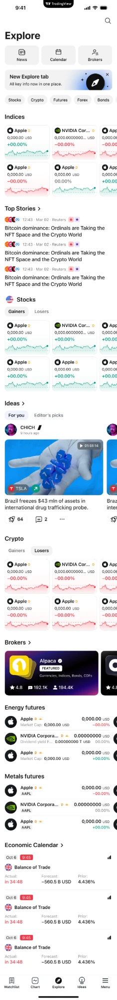
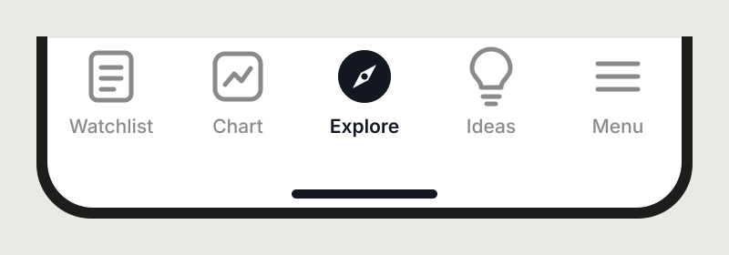

Explore tab
Explore tab
A new tab in TradingView’s mobile apps that brings markets, news and community ideas into one screen. I worked on it from the first requirements to the release and the A/B test.
Task
The app had markets, news and community ideas, but each lived in its own corner. The task was a hub: one screen that shows prices for stocks, crypto, futures and other markets, together with news and ideas from the community. The screen also had to leave room for promo, like featured brokers.

Requirements
I joined before there was a spec. Together with the team I agreed which content we could show on the page, checked which APIs would be available for each block, and helped write the requirements. Design questions were solved early, while the scope was still being set.
Prototypes
I made several prototypes of the screen. The page was built from independent blocks in Figma, so I could change any block on its own, reorder them, and see the result in the prototype right away. This made reviews faster: we could try a different set of blocks during a call instead of after it. The same blocks make up every layout, from phone to tablet.
Once the layout was approved, I designed the components: market cards, news rows, idea cards, broker cards. A few new text styles went into the design system along the way.
Name and place
We took a long time choosing the name, the icon and the position in the tab bar. One idea was to make the new tab the start screen of the app. We dropped it: the screen pulls data from many APIs and would slow down every launch.
We chose the name Explore and a compass icon, and put the tab in the middle of the tab bar.

Tablet and landscape
TradingView’s apps run on phones and tablets, in portrait and landscape, so I designed Explore with adaptivity built in from the start. It was part of the process, not a separate step after the phone version.
For landscape and iPad the page got a different layout, and the cards got variants for wide screens.
Launch
We launched an A/B test of several blocks and tracked the screen’s metrics for a long time after release. The numbers stayed with the company, so I can’t share them here.
Next iterations
The release version was the first iteration, shaped by the results of the A/B test. From the start I also laid out two more iterations. The third iteration is in production now.